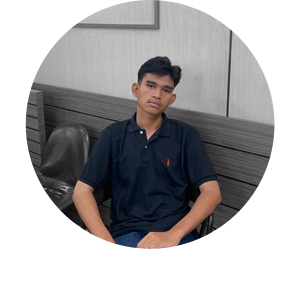
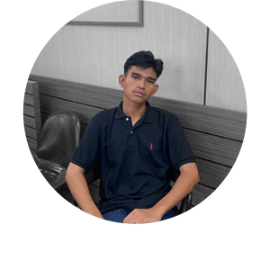

Latar Belakang
Ujian akhir seni budaya itu adalah akar dari Duarupa


Kreatifitas ialah kemampuan untuk menciptakan sesuatu, yang tidak lain untuk menghasilkan sebuah karya. Bagi generasi muda sudah menjadi kewajiban untuk memiliki suatu karya. Berbekal kreasi dan inovasi, kita bisa mencurahkan seluruh potensi dan gagasan yang kita miliki untuk menumbuhkan rasa percaya diri dalam berkarya.
Bagi setiap orang, hasil dari karya yang dimiliki tentunya ingin diakui dan diapresiasi, hal inilah yang membuat kita terpacu dan tidak mudah puas diri dalam mencipta karya-karya baru.
SMK Telkom Lampung mengadakan pertunjukan drama mata pelajaran
Dengan adanya festival Duarupa, diharapkan siswa dapat berkarya meluapkan potensi di bidang seni dan industry. Acara ini diselenggarakan dengan tujuan menjunjung seni budaya dan menjadikan kesenian sebagai perantara di bidang industri.


 
